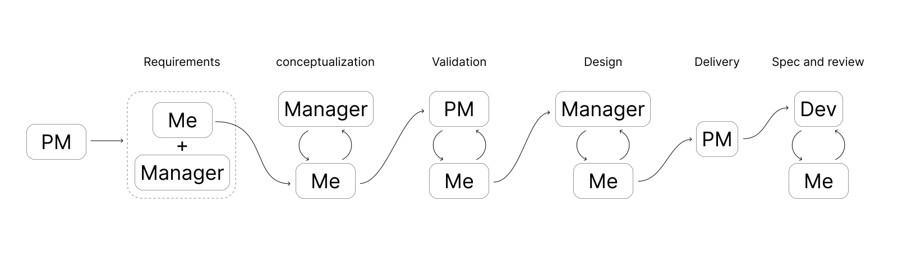
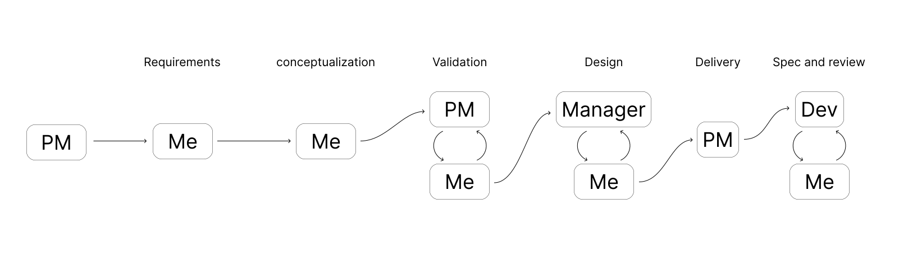

We built that model out, looked at it, and rejected it.
Case Study · 01
Redesigning the
Price List.
Rebuilding a foundational entity in Oracle's pricing suite for the scale, logic, and recurrence of how pricing teams actually work.
01Quick Summary
Problem, Solution and the Impact that followed.
01
Problem
A foundational pricing entity, built to store hundreds of thousands to a million items per list, was designed as a UI-fied database. Hierarchy was traversed by scroll, every action repeated per item, and recurring work like cost passthroughs, renewals, regional rollouts reimposed the same cost on users every time. In B2B contexts, manual price list maintenance routinely runs into weeks or months at scale.
02
Solution
Reframed the price list from a container of data into a surface for manipulating it. Made the smallest unit of work that's Item × UOM × Charge × Date Effectivity into the row. Replaced repetitive single item flows with rule based mass actions, an Excel grade grid escape hatch, and UOM derived pricing logic. Hierarchy moved off the critical path; the work users actually do became first class.
03
Impact
- 4-level scroll hierarchy → single first-layer surface for the 80% of work users do daily
- N-step per-item flow → one rule based action scaling across thousands of priced atoms
- Three pricing patterns surfaced and codified like mass action, grid editing, UOM derivation, thus replacing manual re-execution of logic users already kept in their heads
- Patterns adopted across other pricing apps in the suite, reducing design and ship time for downstream products
02Context
Context For You
1
Pricing and the Fusion Ecosystem
Oracle Fusion Pricing is part of a larger quote-to-cash chain the items are mastered in Product Identity Management (PIM), prices are authored in Pricing, then consumed by CPQ, Order Management, and Subscription Management to fulfill quotes, orders, and recurring contracts. The Pricing suite itself spans price lists, cost lists, discount lists, and pricing strategies and the Price List is the entity that carries the actual prices the rest of the chain runs on.
2
What a Price List is
A Price List stores the values that a downstream order fulfillment system uses to price line items at the moment of sale. It's the single source of truth for "what does this cost" and downstream apps can't fulfill orders without it.
3
How complex a Price List actually is
A single line in a price list isn't a row of data it's a combination of Item × UOM × Charge × Date Effectivity, with the Item being one of four fundamentally different types (standard, subscription, coverage, model), each carrying its own charge logic, attributes, and pricing rules. On top of that sit volume and attribute based adjustments, customer specific flex fields configured per implementation, and date effective variants so a price list with a million "items" actually represents several million distinct priced atoms.
4
Why redesign, not revamp
Lifting the existing UI onto the new design system would have refreshed the visuals while preserving the underlying interaction model that was these actual problem that the data hierarchy mirrored as scroll, the per item flow, the static storage mental model. The redesign brief wasn't about how the price list looked; it was about what a price list should be which is where the real work began.
03DEFINING THE STRUCTURE
Redefining the Core
The mental model we were really designing for
Pricing admins don't think in tables. They think in Excel folders that are nested by year, then country, then customer. The model is a tree of containers, and it exists because the data is too voluminous and too contextual to live any other way. That's the world a pricing admin walks in expecting.
Legacy mirrored that instinct, but only halfway. It preserved the conceptual hierarchy : Price List → Item → Charge → Adjustment that's then collapsed every level onto a single linear screen. Open a price list, scroll past its details, search for items, click an item to reveal its charges, click a charge to reveal its adjustments. The hierarchy was real, but traversed by scroll. For a list with 500K to a million rows, the screen stops being a screen and becomes a corridor and every task means tracking where you are, what you've touched, and how far you've fallen.
legacy screenshot with annotations:
Price list details + DFFs / Items in the price list / Charges for selected items
Price list details + DFFs / Items in the price list / Charges for selected items
The cost isn't theoretical. Manual B2B price list maintenance routinely runs into weeks or months at scale, while properly tooled workflows compress the same work into days. And this work recurs cost pass-throughs during inflation, contract renewals, regional rollouts, customer specific configurations after every implementation. A UI that treats the entity as static storage taxes admins every single time.
The obvious move and why we didn't stop there
The first reframe almost writes itself. If the data is hierarchical and admins think in folders, give them folders. Swap the corridor for a nested drilldown: each level its own page. Cognitive load drops because nothing above or below competes for attention.
linear stack → nested drilldown,
"Not this" labeling the move
"Not this" labeling the move
Then what?
A nested drilldown is a faithful translation of how the data is stored. It isn't a translation of what users are trying to do. A pricing admin doesn't open a price list to admire its hierarchy they open it to see and change values. So we asked the question legacy never had: what's the smallest unit of work that actually matters?
Not the price list. Not the item. Not even the charge. It's the specific combination of Item × UOM × Charge × Date Effectivity that carries a value. That combination is what gets reviewed before a renewal, bulk-edited during a cost pass through, and consumed by every downstream order fulfillment system. It's the atom of the domain and legacy had buried it three clicks deep.
So we made that Atom the row.
Open a price list now and you land directly in a flat, fully populated table where every row is a priced combination, value inline and actionable from the first layer. Search, filter, and multi select scale with the volume now operations that once required traversing a corridor per item now apply to thousands of rows at once. The hierarchy isn't gone; it's moved off the critical path. Charge attributes that don't fit the table, customer specific DFFs, and volume based adjustments live behind a focused drilldown, one click away for the work that genuinely needs them.
The trade off is deliberate. Less-frequent operations cost an extra step. In exchange, the work admins actually spend their week on becomes a first class, single surface activity. We stopped designing a UI for the database and started designing one for the job.
04ADDING ITEMS
Setting Up Items: Decoupling "Add" from "Price"
The PIM upstream
Before any of this, items live somewhere else. Oracle's PIM (Product Identity Management) is part of the broader Fusion ecosystem it is where items are authored, governed, and maintained. The price list's job isn't to create items; it's to attach values to items that already exist. That distinction matters, because legacy didn't honor it.
What legacy made users do
Legacy treated "add an item" and "price an item" as a single task and then forced users to repeat that task line by line. The flow: search for an item, pick one from a dropdown, pick a UOM from another dropdown, define the charge, assign a value, save, repeat. The master list of available items wasn't even visible until you started typing. Every item was a fresh round trip.
For a price list of any meaningful size, the math is brutal. A flow that's tolerable for one item is unworkable for a thousand. Unifying the two actions felt efficient at the unit level and ignored the volume of the work entirely.
flow diagram:
Search → Select Item → Select UOM → Define Charge → Assign Value → Repeat (×N)
Search → Select Item → Select UOM → Define Charge → Assign Value → Repeat (×N)
The reframe: separate the questions
We took a breather and asked whether the unified flow actually scaled and decided it didn't. So we split it into two distinct questions, each with its own surface:
- Which items belong in this price list? — This section.
- What are they priced at? — Next section.
Designing the "add" surface
PIM already has the population so we surfaced it. Click Add Items, and the full PIM catalog appears as an Item × UOM list, browsable upfront, with search and filter across item attributes so users can pull in matching sets in one go instead of one at a time.
new design screen: Add Items panel with PIM-sourced list, attribute filters, multi-select
We also added a new construct: Item Catalogs that's a customer configurable grouping layer set up during pricing app implementation. It lets each customer carve PIM into the slices that match how their business reasons about products (region, brand, line of business, contract type, whatever fits), and add those groups directly into a price list as a unit.
The result
Adding items goes from N repetitions of a 5-step flow to one selection over a populated, filterable list. The act of pricing is removed from the act of inclusion and pricing now gets its own properly designed surface, which is the next section.
05Pricing Items
Pricing Items: Three Moves
Pricing isn't one problem. Once we looked at how analysts actually worked, it resolved into three distinct patterns each with its own logic, its own muscle memory, and its own scale. A single editing surface couldn't serve all three without compromising every one. So we built three.
Move 1: Mass Pricing — codifying the rule, not the value
What legacy made users do
Legacy gave each line a value field. Users looked at their local records (usually a master Excel) and typed the new price in, line by line, list by list. At a single price list of hundreds of thousands of items, across multiple price lists per customer, country, and time period, this isn't tedious. It's impossible.
How users actually price
We asked. The answer was the unlock. Analysts almost never invent prices per item per list. They maintain one source-of-truth list usually a base price list or a cost list in Excel and derive every other list from it by rule:
- "Take the base list, mark up 5% for next year."
- "Take the cost list, add a 30% margin for this customer."
- "Take the current US prices, convert and add 8% for the EU rollout."
The logic was already there. Legacy just overlooked it, so users executed it manually every time.
The reframe
If users price by rule, let them price by rule. We added a Mass Pricing surface: select Item × Charge atoms from the main table, click Update Prices, and a drawer opens with a rule builder.
The drawer scopes itself intelligently. The main list has thousands of items but only a handful of supported charges, so the drawer surfaces just the charges in the user's selection keeping the rule definition focused on what's actually being edited.
rule builder structure — Base Entity (Price List / Cost List / Current PL Price) → Source List → Reference Date → Operation (Markup/Markdown by % or amount) → Value → Effective Dates
The result: the unit of work shifts from the price to the rule. A single rule action prices thousands of atoms. The logic users already kept in their heads is now codified, auditable, and reusable.
Removing the housekeeping step
A second order problem surfaced once we built this: a single Item × UOM × Charge × Date Effectivity atom can't carry two prices at the same time the order management system downstream wouldn't know which to honor. So updating a price isn't really one action; it's two: end-date the old price, start the new one. Legacy forced users to do both, manually, in sequence.
We collapsed the second action into the first. If a user adds a new price with a future start date, and an existing open ended price is still active, the existing price auto-end-dates the day before the new one begins.
The user never thinks about the housekeeping. The integrity of the data is preserved without making them earn it.
timeline diagram: existing price (open-ended) → new price added with future start → existing auto-ends one day prior
Move 2: The Grid Escape Hatch — designing for muscle memory
The constraint, reframed as a feature
Pricing analysts live in grids. Excel is their native environment they share, review, and reason about prices in tabbed grids, often passing spreadsheets around over email. That muscle memory is decades deep.
Our price list is built on Oracle's table component, which is the right default for this surface: prices are sensitive transactional data, and tables enforce a deliberate edit flow where they click a cell, open an edit affordance, commit the change. That friction is protective. Grids, by contrast, allow accidental edits and paste-overs, which is exactly what you don't want as the default for data that flows directly into order fulfillment.
But the same friction that protects against single cell mistakes makes bulk editing painful. Both modes are right; neither is right for everything.
The reframe
Don't replace the table. Don't compromise it. Let users opt into a grid when they need one.
Users select atoms from the main table and promote them into a dedicated grid surface that's a deliberate mode switch, not a default. Inside the grid, they can paste columns directly from Excel, edit in place, and apply changes in bulk, in exactly the workflow they already practice outside the product.
screenshot: grid editing surface, paste-from-Excel demonstration
The result: the table protects the 99% case. The grid serves the 1% case where bulk editing is the actual job. Users don't break their existing patterns to use our product they bring those patterns in.
Move 3: UOM-Derived Pricing — codifying logic users were re-running by hand
The pattern in the data
Every price list we looked at had the same item appearing in multiple UOMs as separate lines (Each, Pair, Dozen, Case) each with its own price. Legacy required users to enter every variant manually.
When we asked analysts how they actually priced different UOMs, the answer was almost always the same shape: "It's price-per-unit times UOM, plus a markdown." A pair is 2× minus 2%. A dozen is 12× minus 12%. The conversion logic was consistent across an item group, often consistent across an entire customer's catalog.
Why this matters more than it looks
The deeper issue isn't just data entry volume. The logic was already in the analysts' heads that legacy made them re-execute it manually for every item, every list, every time. That's not just slow; it's error-prone. Manual re-execution of a known rule is exactly where typos, missed multipliers, and inconsistencies enter the data. Codifying the rule once doesn't just save keystrokes; it produces consistency the manual flow couldn't guarantee.
The reframe
Price the base unit. Define the UOM conversion rule once. Apply it across the item group.
We paired this with the Mass Pricing rule builder from Move 1 — so a single action can now price a base unit across a group and derive every UOM variant in the same pass.
1 base price (Each: $10) → UOM rule (Pair = 2× + 2%, Dozen = 12× + 12%) → derived prices auto-populate across the group
The result: data entry collapses, and so does the surface area for human error. What used to be hundreds of manual entries per item group becomes one base price plus one rule.
Why three moves, not one
A single "edit prices" surface would have been simpler to design and worse at every job. Mass Pricing, the Grid, and UOM-Derived Pricing aren't variations of the same task they're responses to three different things users were already doing, in three different mental modes: rule based derivation, hands on bulk editing, and implicit logic that had never been codified. Designing for the mode, not the action, is what made each surface earn its place.
06Items
Items: Holding the Line, Then Finding the Door
Four item types, one table
Price lists support four fundamentally different item types: Standard items charged one-time or on a recurring basis; Subscription items priced via rate plans that combine one-time, recurring, and usage-based charges; Coverage items like warranties, sold in bundles and priced against an item, a category, or the whole catalog; and Models, which are configurations assembled from standard items.
These aren't variations of the same thing. They differ in setup, in pricing logic, and in the attributes that matter. A subscription's rate plan has nothing in common with a warranty's coverage scope. Legacy treated them as one where every attribute for every type sat in a single table, and the table stopped being scannable.
The legacy single-table view jammed every type's attributes into one row structure with most cells empty because most attributes don't apply to most rows.
legacy single-table view — one wide table with columns for rate plan, coverage scope, model config, and standard pricing all jammed into one row structure; most cells empty because most attributes don't apply to most rows
The disagreement
Our design proposed separating the four into tabs with one surface per item type, each with the attributes that actually applied. PMs preferred a single table for engineering simplicity. They escalated, secured senior approval, and built a custom component to support type switching from inside the action collection which was a pattern that conflicted with the design system and, more fundamentally, conflated "switching what you're acting on" with "acting on what you've selected."
Holding the line without blocking delivery
We didn't win that round. The custom component shipped. What we did do: annotate the deviation in the design file in the loudest red we had, and leave our tabbed design intact as the documented intent. Delivery moved forward; the disagreement was on record. Both teams could ship and both positions were preserved.
The door that opened later
I'd been making a habit of reading our design system's quarterly release notes — partly out of curiosity, partly because unresolved itches don't go away just because a decision was made. Oracle is a large company with hundreds of products, and the DS team continuously evolves components based on needs surfacing across the org — none of which had anything to do with our project.
Three quarters in, an enhancement landed: a context switcher pattern, purpose-built for switching the entity in scope without conflating it with actions on that entity. It wasn't tabs. It wasn't the custom component. It was the thing our problem had been asking for, built for someone else's reasons entirely.
I brought it to my manager, we mocked it up against the live surface, and we walked it back to the PM as a future enhancement. This time the conversation went differently there was now a sanctioned, system-native answer to the question we'd raised nine months earlier. It went into the roadmap.
side-by-side — left: custom component with type-switcher embedded inside the action collection (entity scope and actions tangled); right: context switcher with type-switcher placed above and separate from the action collection (entity scope and actions cleanly separated)
The lesson
Not every design fight is winnable in the moment, and not every loss is permanent. Documenting a principled disagreement is a different act from blocking delivery — and doing both, well, is part of the job. The "itch" of an unresolved design problem is information; staying alert to the ecosystem around your product — even the parts that have nothing to do with you — is how you eventually act on it. Three quarters of patience and a habit of reading release notes turned a loss into a roadmap item.
07Conclusion
Conclusion
This was my first major product redesign, and the lessons came in two registers. The craft ones I can name now because the project taught them: question the data model before accepting it as the interaction model, design for the mode the user is in rather than the action they're taking, and treat constraints as design inputs rather than obstacles.
The deeper one I learned by watching my manager was that a documented disagreement is more durable than a won argument, and that most of the design actually gets made in the tight loops between people, not at the edges of the process. I came in as a designer who could produce screens. I left as one who could hold a position, run a loop, and recognize the right answer when it showed up nine months late.
08WORKFLOW
How I worked with the team
Here's how the work moved between PM, Manager, Dev, and me across the project.
Here's how the work changed over successful cycles.


09EXTRAS
Some Tasty Sides
image · component library
Systems
How I maintained an internal component library specefic to Pricing suite, so the already made components can be used across different apps, maintaining Familiarity
image · scaleable flows
Patterns
Created scaleable flows like mass action, data grid entry, matrix. tiers that were used in other pricing apps fitting it to their use case. bacame easy to ship other products fast
image · pricing on a timeline
Exploration
Experimented with changing the way user saw pricing data, instead of grids why not visualize prices in a timeline. Idea didn't move further due to lack of research bandwidth. Got appreciated at senior levels for the effort.
— end of case study —